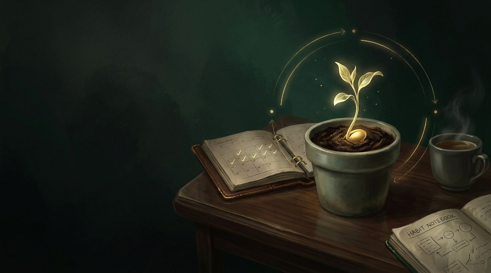

الانضباط أم الدافعية: لماذا لا يكفي الحماس وحده؟
دراسة شاملة في الفارق الجوهري بين تقلبات الحماس العاطفي وثبات الانضباط الواعي، مع استراتيجيات تحويل الإرادة إلى نظام عمل يومي مستدام.
اقرأ المقال ←أفكار عملية ورؤى استراتيجية لبناء الانضباط الصارم، هندسة العادات اليومية، تأسيس الثقة الحقيقية بالنفس، والتطور التراكمي المستمر.
تطوير الذات في حكمة ونور ليس مجرد شعارات تحفيزية عابرة، بل ممارسة عملية قائمة على تحويل الأفكار إلى أفعال يومية ملموسة:
الانضباط والتغيير الحقيقي لا يحدثان فجأة، بل يتكونان عبر خطوات صغيرة وتراكمية مستمرة يصنعها الالتزام اليومي.
اختر مساراً تطبيقياً موجهاً وابدأ خطتك العملية لبناء القوة الشخصية
كيف تبني انضباطاً حديدياً، تتغلب على التسويف، وتصنع عادات يومية تضاعف إنجازك.
صياغة الأهداف الكبرى، تقسيم المشاريع، ومتابعة التطور الشخصي باستمرار.
بناء ثقة داخلية صلبة لا تتأثر بآراء الآخرين واتخاذ القرارات الشجاعة.

التخلص من المشتتات الرقمية، تنظيم الأولويات، وإتقان التركيز المكثف.

التعامل مع الانتكاسات، بناء الصلابة النفسية، وتحويل العقبات إلى فرص للنمو.
دراسات وأدلة عملية مخصصة لبناء الانضباط والعادات والثقة
دراسة شاملة في الفارق الجوهري بين تقلبات الحماس العاطفي وثبات الانضباط الواعي، مع استراتيجيات تحويل الإرادة إلى نظام عمل يومي مستدام.
اقرأ المقال ←
دليل منهجي متكامل في هندسة السلوك وتكوين العادات المستدامة عبر المحفزات والتكرار الواعي وتغيير الهوية الشخصية.
اقرأ المقال ←دليل تطبيقي شامل يشرح لماذا يتفوق الانضباط على الحماس المؤقت، وكيف تبني عادات يومية تضمن وصولك لأهدافك.
اقرأ المقال ←نماذج وأدوات تطبيقية لبناء الروتين والتحكم بالوقت والتركيز
نعمل على إعداد نماذج تفاعلية وسجلات تتبع العادات (Habit Trackers) ودليل الجلسات العميقة للمساعدة في التطبيق اليومي.
⏳ قريباًروّاد ومتخصصون قدّموا رؤى عمليّة في بناء الإرادة والتطوير الشخصي

رائد دراسة العادات وتأثير التكرار العصبي والفلسفة البراغماتية في بناء القوة الشخصية.
اقرأ الملف الشخصي ←
مبتكر مفهوم الفعالية الذاتية والتعلم الملاحظ ودور الإيمان بالقدرة في الإنجاز.
اقرأ الملف الشخصي ←
مؤسس العلاج بالمعنى وصاحب كتاب الإنسان يبحث عن المعنى، ورائد الحرية الروحية.
اقرأ الملف الشخصي ←
صاحبة أبحاث عقلية النمو والتفريق بين الذهنية الثابتة وذهنية التطوير المستمر.
اقرأ الملف الشخصي ←
مكتشف حالة التدفق والتركيز التام والاندماج في الإنجاز والعمل الإبداعي.
اقرأ الملف الشخصي ←
صاحبة أبحاث العزيمة والتأكيد على أن الشغف والمثابرة طويلة الأمد يفوقان الموهبة.
اقرأ الملف الشخصي ←ترشيحات وأعمال صوتية ملهمة في رحلة التغيير المستمر
نقوم حالياً بإعداد مكتبة صوتية وقراءات مسموعة لأهم الكتب المتخصصة في بناء العادات وتطوير الشخصية.
⏳ قريباًتحديات محددة المدة لاختبار إرادتك وترسيخ الانضباط في حياتك
برامج تحدي تفاعلية (7 أيام، 21 يوماً، 30 يوماً) ستكون متاحة قريباً لمساعدتك على ترسيخ الالتزام اليومي.
⏳ قريباً« الانضباط اليومي هو الذي يحول الأحلام البعيدة إلى واقع ملموس. »